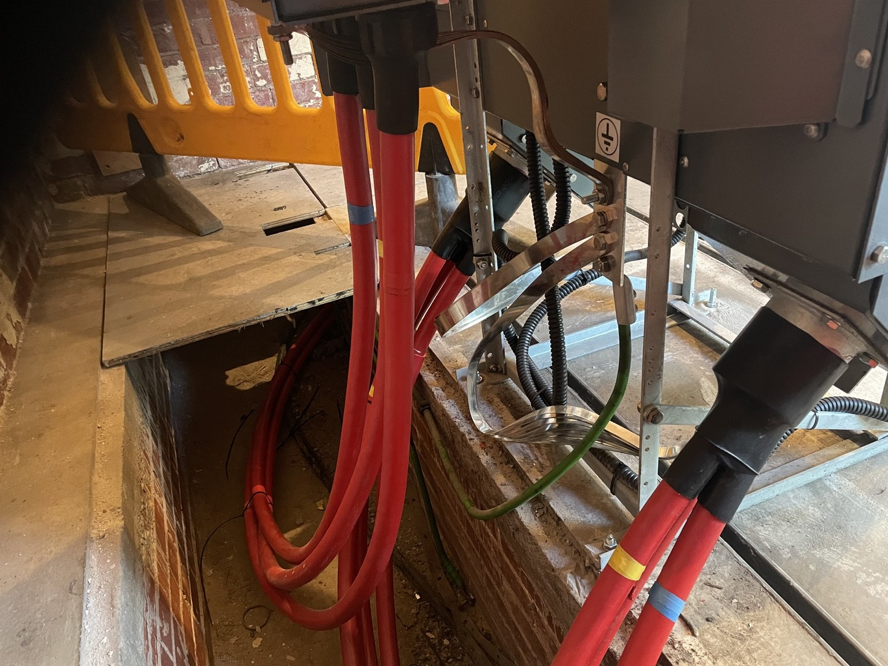

People
Competent individuals with clearly defined responsibilities.
HSEQ & OPERATIONAL EXCELLENCE
Electrical safety forms part of how work is planned, controlled, executed and handed over.
OUR ELECTRICAL SAFETY PRINCIPLES
Review work scope, network condition, interfaces and hazards before activity begins.
Establish clear operational ownership, configuration and safe working boundaries.
Consider alternate supplies, potential backfeeds and changing network conditions.
Apply and control appropriate earthing requirements throughout the work.
Ensure work proceeds under the correct electrical safety documentation.
Monitor permit holders and changing project conditions throughout delivery.

Competent individuals with clearly defined responsibilities.
Consistent operational procedures and disciplined documentation.
Accurate understanding and control of electrical network configuration.
Clear interfaces between operational, construction, commissioning and client teams.
Every energisation is the result of preparation. Every safe handover is the result of control.